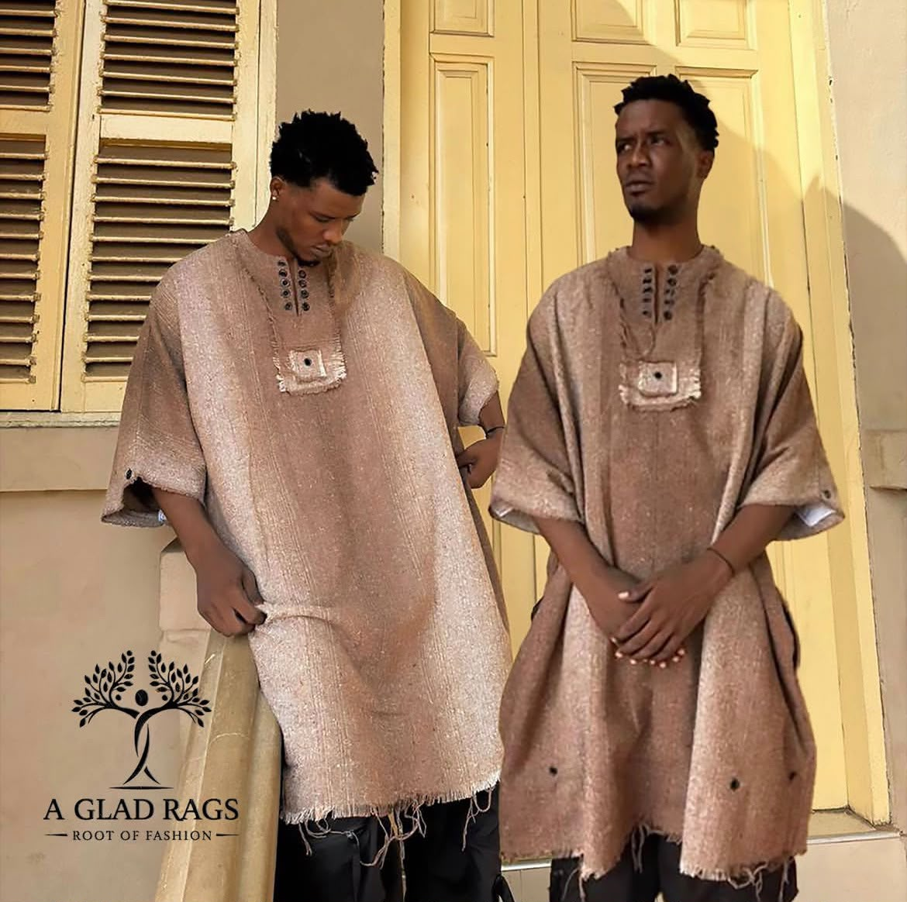

The Fugu Drape
The Fugu, also called Batakari in parts of Ghana, is a traditional handwoven smock rooted in northern savannah and Sahel-influenced weaving cultures. Narrow strips of cotton are stitched together by hand to create its distinctive wide, boxy silhouette.